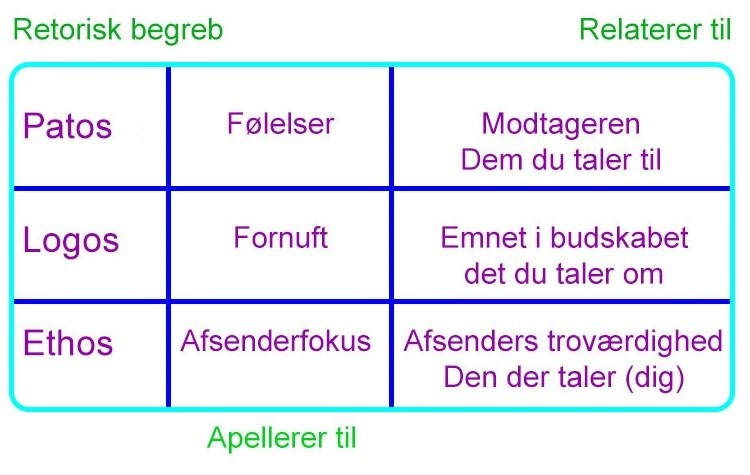

Apelformerne etos, logos og patos

Filosoffen Aristoteles formulerede tre appelformer, vi kender i dag, som ethos, logos og patos.
Han mente man kunne anvende disse metoder til at overbevise andre om vores budskab.
Disse appelformer bliver oftest brugt til argumentationer.
Patos
Denne form handler generalt om humor, medlidenhed, empati og alvor.
Gennem patos kan man skabe en række forskellige føelser hos målgruppen. Det handler ikke om at bruge de fleste metoder så muligt, så alt for mange føelser bliver indblandet, men at skabe en stemningstone.
Logos
Denne form handler generalt om fornuft, lyst til viden, og få modtageren til at tænke kritisk.
Logos er ikke den hurtigeste appelform. Patos skaber hurtigere en interesse hos målgruppen, men gennem logos skabes der en længervarende opmærksomhed fra målgruppen.
Det er ikke nemt at skabe opmærksomhed gennem logos, man kan derfor bruge kendte mennesker til at skabe interesse.
Ethos
Ethos er troværdighed.
Det er vigtigt at virke troværdig, så modtageren vil tage dig seriøs. Når man er en troværdig kilde, overfører modtageren sine positive føelser til dig, og det du står for.